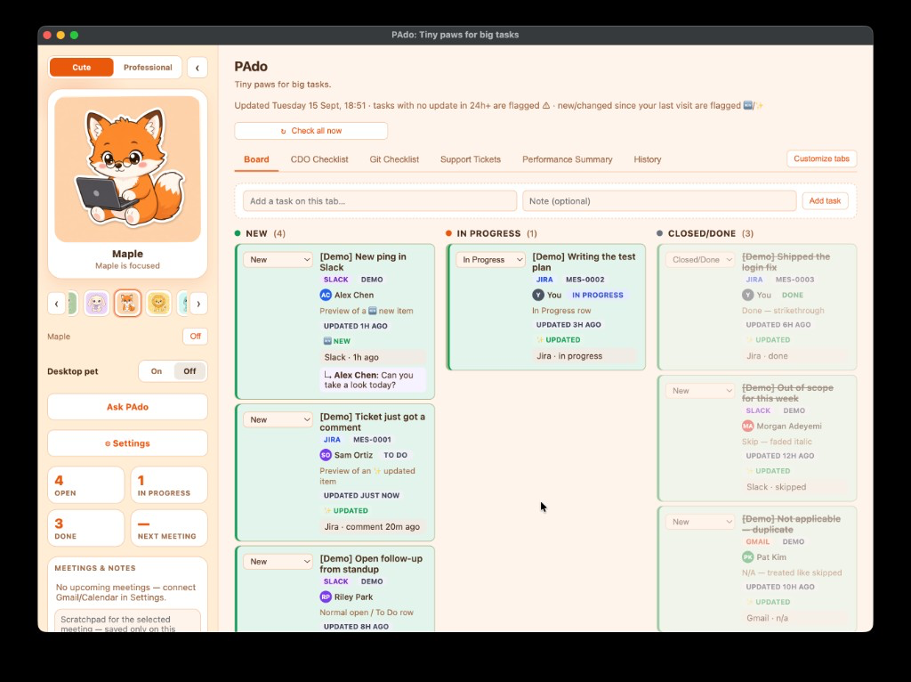
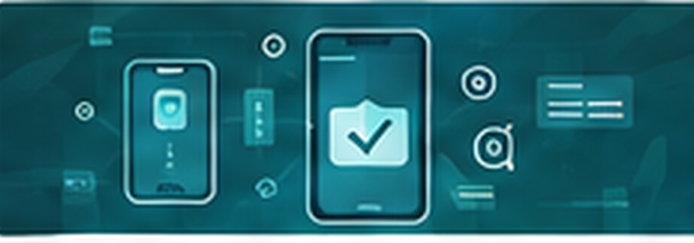

Corridor
Wall of Fame
Framed work. Hover to light a piece. Click to walk in.

🤖 AI QA Agent
Requirement-driven E2E, evidence and failure analysis.

PAdo
Personal AI desktop assistant for Slack, Jira, Gmail and Confluence.

Synthetic monitoring
Datadog canaries, Slack, Claude as first-level investigation.

Mobile E2E
Appium and Maestro on Workspace-scale mobile launches.

GenQA
AI QA agent for analysis, generation and exploratory testing.
🧠 LLM Test Lab
Conversational AI, guardrails, hallucination and prompt-injection.